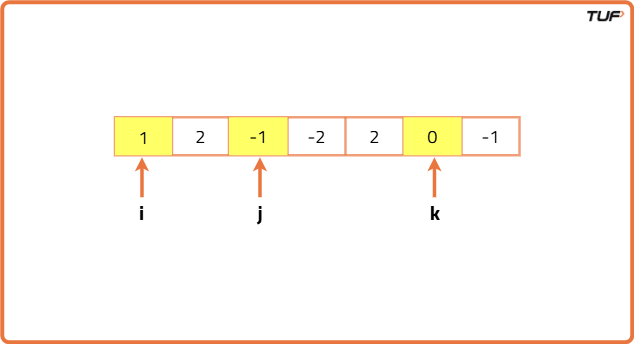
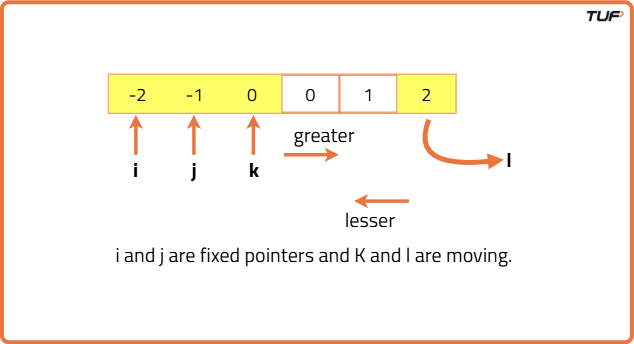

4 Sum | Find Quads that add up to a target value
Problem Statement: Given an array of N integers, your task is to find unique quads that add up to give a target value. In short, you need to return an array of all the unique quadruplets [arr[a], arr[b], arr[c], arr[d]] such that their sum is equal to a given target.
Note: a, b, c and d are also distinct and lies between 0 to n-1 (both inclusive).Examples
Example 1: Input Format:arr[] = [1,0,-1,0,-2,2], target = 0 Result: [[-2,-1,1,2],[-2,0,0,2],[-1,0,0,1]] Explanation:We have to find unique quadruplets from the array such that the sum of those elements is equal to the target sum given that is 0. The result obtained is such that the sum of the quadruplets yields 0. Example 2: Input Format: arr[] = [4,3,3,4,4,2,1,2,1,1], target = 9 Result: [[1,1,3,4],[1,2,2,4],[1,2,3,3]] Explanation: The sum of all the quadruplets is equal to the target i.e. 9.
Disclaimer: Here is the practice link to help you assess your knowledge better. It's highly recommend trying to solve it before looking at the solution.
Brute Force Approach
Algorithm
- Create a set to keep only unique groups of four numbers.
- Use the first loop from the start of the array to the end to choose the first number.
- Inside it, run a second loop starting from the next position to choose the second number.
- Then, run a third loop starting from the next position after the second number to choose the third number.
- Finally, run a fourth loop starting from the next position after the third number to choose the fourth number.
- Check if the total of these four numbers equals the target value.
- If yes, arrange the four numbers in order and add them to the set.
- Once all loops are done, return the set as a list of unique groups of four numbers.
Code
#include <bits/stdc++.h>
using namespace std;
class Solution {
public:
// Function to find quadruplets with sum = target
vector<vector<int>> fourSum(vector<int>& arr, int target) {
// Get size of array
int n = arr.size();
// Use set to avoid duplicate quadruplets
set<vector<int>> st;
// First loop - pick first element
for (int i = 0; i < n; i++) {
// Second loop - pick second element
for (int j = i + 1; j < n; j++) {
// Third loop - pick third element
for (int k = j + 1; k < n; k++) {
// Fourth loop - pick fourth element
for (int l = k + 1; l < n; l++) {
// Calculate sum of four chosen numbers
long long sum = (long long)arr[i] + arr[j] + arr[k] + arr[l];
// Check if sum matches target
if (sum == target) {
// Store quadruplet in sorted order
vector<int> temp = {arr[i], arr[j], arr[k], arr[l]};
sort(temp.begin(), temp.end());
// Insert into set to ensure uniqueness
st.insert(temp);
}
}
}
}
}
// Convert set into vector of quadruplets
return vector<vector<int>>(st.begin(), st.end());
}
};
int main() {
// Input array
vector<int> arr = {1, 0, -1, 0, -2, 2};
// Target sum
int target = 0;
// Create object
Solution obj;
// Get all quadruplets
vector<vector<int>> ans = obj.fourSum(arr, target);
// Print result
for (auto quad : ans) {
for (int num : quad) cout << num << " ";
cout << endl;
}
return 0;
}
Complexity Analysis
Time Complexity: O(N3 * log(no. of unique triplets)), where N = size of the array.
Reason: Here, we are mainly using 3 nested loops. And inserting triplets into the set takes O(log(no. of unique triplets)) time complexity. But we are not considering the time complexity of sorting as we are just sorting 3 elements every time.
Space Complexity: O(2 * no. of the unique triplets) as we are using a set data structure and a list to store the triplets.
Better Approach
Algorithm
- Create a set to keep only unique groups of four numbers.
- Run the first loop from the start to the end of the array to pick the first number.
- Inside it, run the second loop from the next position to pick the second number.
- Before starting the third loop, make a HashSet to keep track of numbers between the second and third positions.
- Run the third loop from the next position after the second number to the end of the array to pick the third number.
- Find the fourth number by subtracting the total of the first three numbers from the target value.
- If this fourth number is already in the HashSet, arrange all four numbers in order and add them to the set.
- Add the current third number to the HashSet (only numbers between the second and third loops are stored).
- After all loops finish, return the set as a list of unique groups of four numbers.
Code
#include <bits/stdc++.h>
using namespace std;
class Solution {
public:
// Function to find all unique quadruplets
vector<vector<int>> fourSum(vector<int>& arr, int target) {
int n = arr.size();
set<vector<int>> st;
// First loop - pick first number
for (int i = 0; i < n; i++) {
// Second loop - pick second number
for (int j = i + 1; j < n; j++) {
// HashSet to store numbers between j and k
unordered_set<int> seen;
// Third loop - pick third number
for (int k = j + 1; k < n; k++) {
// Find required fourth number
long long required = (long long)target - arr[i] - arr[j] - arr[k];
// If required number is already in set, we found a quadruplet
if (seen.count(required)) {
vector<int> temp = {arr[i], arr[j], arr[k], (int)required};
sort(temp.begin(), temp.end());
st.insert(temp);
}
// Add current third number into set
seen.insert(arr[k]);
}
}
}
// Convert set into vector and return
return vector<vector<int>>(st.begin(), st.end());
}
};
int main() {
vector<int> arr = {1, 0, -1, 0, -2, 2};
int target = 0;
Solution obj;
vector<vector<int>> ans = obj.fourSum(arr, target);
for (auto quad : ans) {
for (int num : quad) cout << num << " ";
cout << endl;
}
return 0;
}
Complexity Analysis
Time Complexity: O(N3*log(M)), as we are mainly using 3 nested loops, and inside the loops there are some operations on the set data structure which take log(M) time complexity.
Space Complexity: O(2 * no. of the quadruplets)+O(N), as we are using a set data structure and a list to store the quads. This results in the first term. And the second space is taken by the set data structure we are using to store the array elements. At most, the set can contain approximately all the array elements and so the space complexity is O(N).
Optimal Approach
Algorithm
- Sort the array first.
- Use the first loop to pick the first number. Skip it if it is the same as the previous one to avoid duplicates.
- Inside it, use the second loop to pick the second number. Also skip it if it repeats the previous one.
- Set two pointers: one just after the second number (left pointer) and one at the end of the array (right pointer).
- While the left pointer is before the right pointer, calculate the total of the four chosen numbers.
- If the total equals the target, save the quadruplet, then move both pointers while skipping duplicate numbers.
- If the total is less than the target, move the left pointer one step forward to increase the total.
- If the total is greater than the target, move the right pointer one step backward to reduce the total.
- After all loops finish, return the list of unique groups of four numbers.


Code
#include <bits/stdc++.h>
using namespace std;
class Solution {
public:
// Function to find all unique quadruplets
vector<vector<int>> fourSum(vector<int>& arr, int target) {
int n = arr.size();
vector<vector<int>> ans;
// Step 1: Sort array
sort(arr.begin(), arr.end());
// Step 2: First loop for first number
for (int i = 0; i < n; i++) {
// Skip duplicates for first number
if (i > 0 && arr[i] == arr[i - 1]) continue;
// Step 3: Second loop for second number
for (int j = i + 1; j < n; j++) {
// Skip duplicates for second number
if (j > i + 1 && arr[j] == arr[j - 1]) continue;
// Step 4: Two pointers for remaining two numbers
int left = j + 1, right = n - 1;
while (left < right) {
long long sum = (long long)arr[i] + arr[j] +
arr[left] + arr[right];
if (sum == target) {
ans.push_back({arr[i], arr[j],
arr[left], arr[right]});
// Move left pointer skipping duplicates
while (left < right && arr[left] == arr[left + 1])
left++;
// Move right pointer skipping duplicates
while (left < right && arr[right] == arr[right - 1])
right--;
left++;
right--;
}
else if (sum < target) left++;
else right--;
}
}
}
return ans;
}
};
int main() {
vector<int> arr = {1, 0, -1, 0, -2, 2};
int target = 0;
Solution obj;
vector<vector<int>> ans = obj.fourSum(arr, target);
for (auto quad : ans) {
for (int num : quad) cout << num << " ";
cout << endl;
}
return 0;
}
Complexity Analysis
Time Complexity: O(N3), as Each of the pointers i and j, is running for approximately N times. And both the pointers k and l combined can run for approximately N times including the operation of skipping duplicates. So the total time complexity will be O(N3).
Space Complexity: O(no. of quadruplets), as This space is only used to store the answer. We are not using any extra space to solve this problem. So, from that perspective, space complexity can be written as O(1).